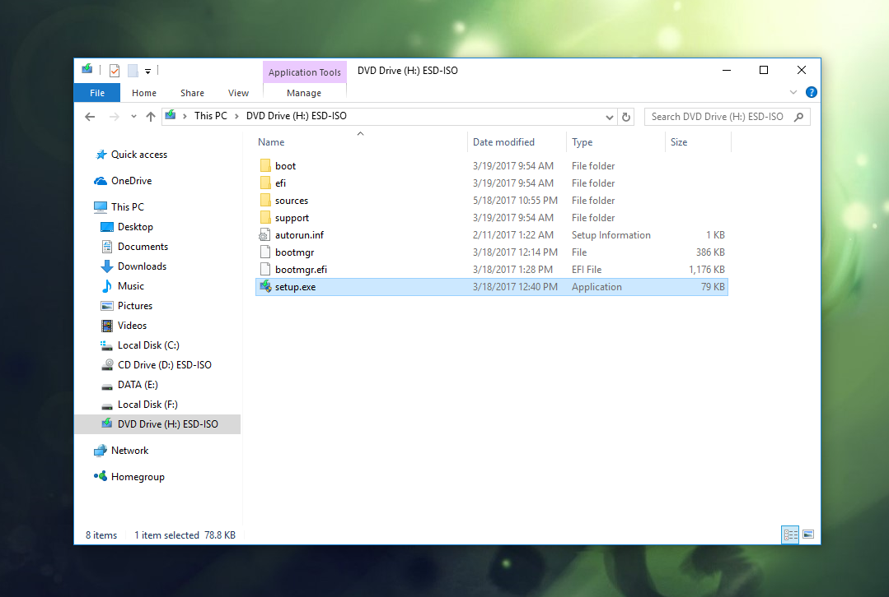
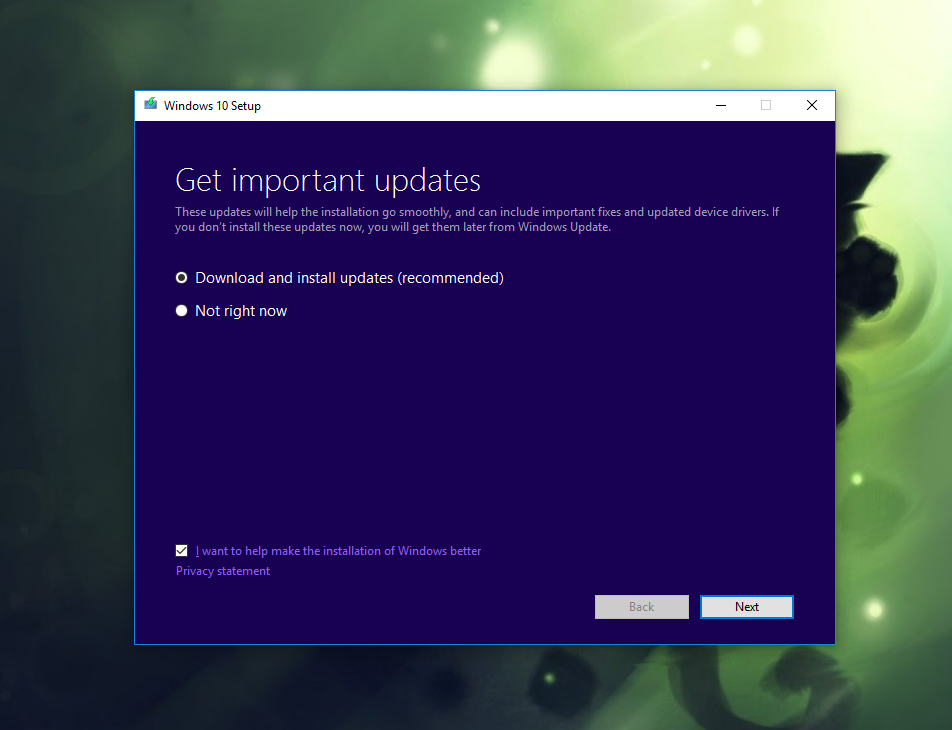

Cara Cepat Upgrade ke Windows 10 Creators Update Dengan File ISO
Sudah sejak awal april lalu, windows 10 merilis update terbarunya dengan code version 1703 atau lebih dikenal dengan nama Windows 10 Creators Update. Tentunya kita tidak ingin tertinggal merasakan fitur baru dari update ini. Ada beberapa cara yang bisa kita gunakan untuk meng-upgrade ke Windows 10 Creators Update, salah satunya menggunakan file ISO.
Salah satu kelebihan menggunakan file ISO adalah tidak diwajibkan lagi menggunakan koneksi internet. Kita bisa download terlebih dahulu file ISO windows 10 Creators Update, lalu gunakan file tersebut untuk upgrade. Tentunya file yang sudah di download bisa digunakan untuk intalasi/upgrade di kemudian hari dan berlaku untuk lebih dari satu komputer. Jadi, tidak perlu khawatir kalau tidak memiliki koneksi stabil untuk upgrade secara online. Sebelum kita mulai step-by-step nya, pastikan file ISO Windwos 10 Creators Update sudah dimiliki.Langkah-langkah Upgrade ke Windows 10 Creators Update dengan File ISO.
Kemudian, jalankan setup.exe untuk memulai...
Tunggu beberapa saat untuk proses inisialisasi...
Setelah itu saya menyarankan untuk memilih opsi Download and Install (recomended).
Program akan melakukan pengecekan dan insialisasi untuk kesiapan komputer melanjutkan proses.
Setelah siap akan tampil seperti gambar berikut, selanjutnya kita klik Install untuk melanjutkan.
Selanjutnya kita hanya tinggal menuggu prosesnya saja seperti install biasa (hanya saja tidak ada lagi pengaturan partisi). Setelah semua proses selesai, kita bisa login seperti biasa dan Windows 10 sudah ter-upgrade ke versi CreatorsUpdate.
Untuk memastikan kalau sistem operasi yang kita gunakan sudah upgrade ke Windows 10 Creators Update, cek menggunakan winver. Caranya klik tombol start, kemudian ketik winver, dan buka sortcut tersebut.
Windows 10 Creators Update memiliki code version 1703 dengan build 15063.
Selamat mencoba...
About US

Nama saya adalah Ricky Syahputra dari Indonesia. saya menulis artikel ini untuk berbagi cara-cara supaya tidak ada yang bingung lagi untuk mengotak-atik komputer-komputer anda, dan juga bisa saling sharing.